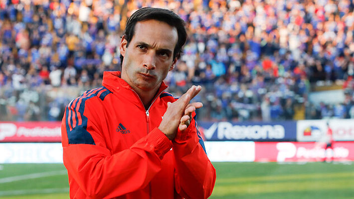
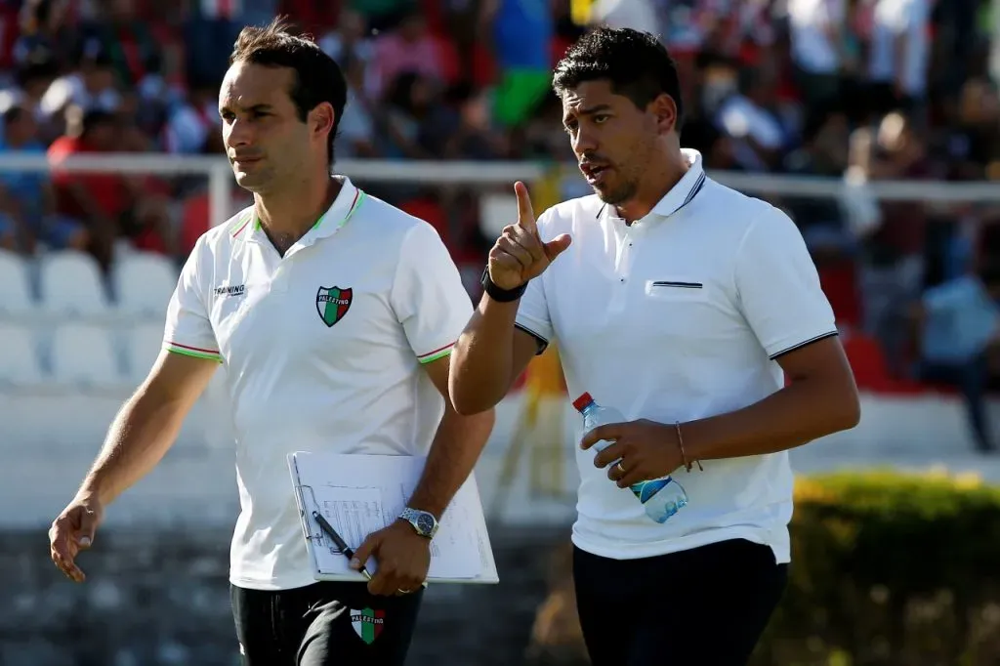

Sebastián Miranda en la órbita de La Roja para hacer dupla técnica con Nicolás Córdova
El ex técnico interino de la U asoma para acompañar al ex futbolista en el partido ante Ecuador. Además, habría otro regreso.

Este viernes, Nicolás Córdova tuvo su primer entrenamiento al mando de la Selección Chilena, la cual dirigirá de forma interina para el partido del próximo martes 21 de noviembre, ante Ecuador, por la sexta fecha de las Eliminatorias rumbo al Mundial 2026.
En el complejo Juan Pinto Durán, el jefe técnico de las selecciones menores se presentó ante el plantel de jugadores con parte del cuerpo técnico de la Selección Sub 20, con Ariel Leporati y Germán Tagle como asistentes, más Ricardo Madariaga de preparado físico.
Sin embargo, se rumorea un “bombazo” al confirmar que existe un nombre en la órbita de La Roja para que pueda hacer dupla técnica con Córdova, ante Ecuador, y ese es el de Sebastián Miranda, que actualmente dirige el equipo de Proyección en Universidad de Chile, y donde tuvo un interinato en el Primer Equipo el 2022.
Pero no es el único, porque además, otro nombre acercado a la dirigencia de la ANFP para acompañar al actual técnico interino es el de Hernán Torres, ex preparador físico de Claudio Borghi en Colo Colo y la Selección, lo que marcaría su regreso a Pinto Durán tras casi una década.

¿Cuando trabajaron juntos ambos técnicos?
Luego del retiro de Miranda, en 2014, y tras trabajar un tiempo con las divisiones inferiores de Unión Española, el 2016 recibió el llamado de Córdova para que sea su asistente, acompañándolo en tres equipos, Palestino, Santiago Wanderers y Universitario de Perú.
Pero en solitario, el ex defensor de Universidad Católica también estuvo en La Roja, cuando acompañó a Patricio Ormazábal, también como ayudante, previo a sumarse a la U, donde no sólo dirige a las juveniles, sino que más de una vez ha tomado el mando del plantel principal.